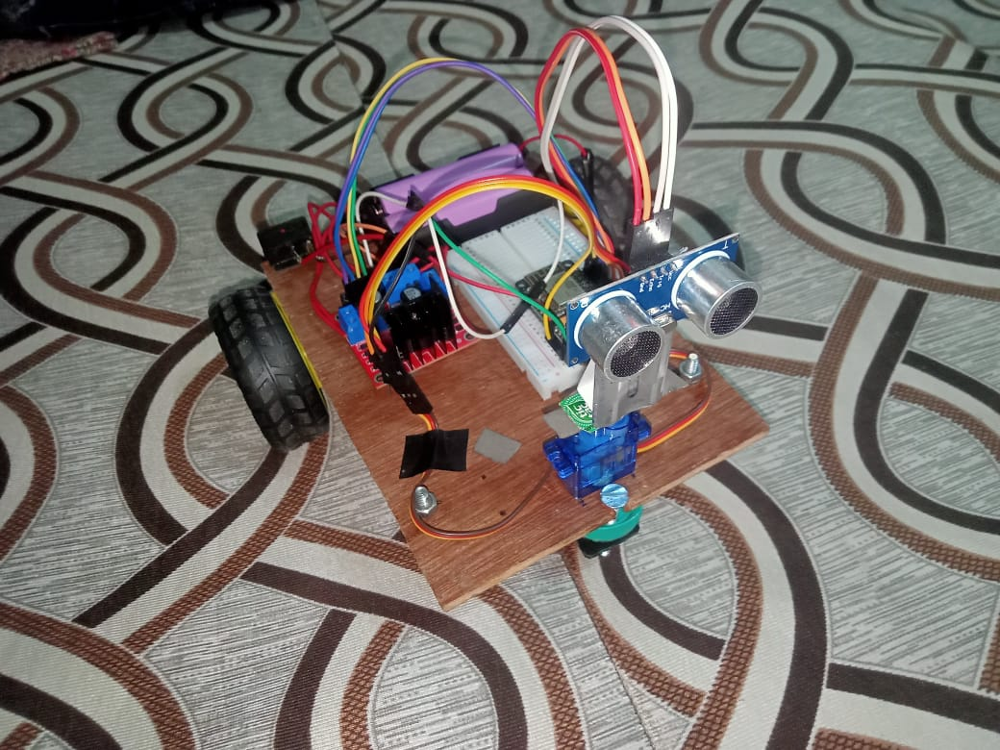

Autonomous Pathfinder Robot
Introduction
An autonomous navigating robot made with simple components capable of detecting obstacles in its path, scanning for a clear corridor, and adjusting its trajectory accordingly.
I made this project when I first got my hands on IoT microcontrollers. It was really fun playing with and tuning this robot until I eventually needed the parts for another project and had to dismantle it. R.I.P
Technical Details & Approach
Navigation & Obstacle Avoidance Logic:
The robot is designed as a differential drive platform with two 5V DC BO geared motors on 65mm rubber wheels and a front caster ball wheel for smooth pivoting. Real-time spatial perception is provided by an HC-SR04 ultrasonic distance sensor mounted directly atop a TowerPro SG90 micro servo.
While rolling forward, the sensor continuously measures clearance ahead by timing ultrasonic echo reflections:
- Clear Forward Sector (> 25 cm): The robot drives both motors forward at balanced speeds.
- Obstacle Detected (≤ 25 cm): The robot immediately stops its drive wheels to avoid collisions. The microcontroller commands the servo to pan the ultrasonic sensor left and right to sample clearances on both sides.
- Trajectory Selection: The onboard microcontroller evaluates both distance readings, selects the direction offering the widest unobstructed path, pivots the chassis toward that opening using differential motor rotation, and resumes forward drive.
- Dead-End Escape: If both left and right directions are obstructed, the robot reverses and executes a 180° spin to explore open space.
Drive Actuation & Power Isolation:
Motor power is supplied through an L298N dual H-bridge motor driver module, enabling smooth PWM speed control and bidirectional torque while isolating sensitive microcontroller logic from motor inductive noise and flyback spikes.
Components: L298N Dual H-Bridge Motor Driver, 2× BO Motor 5V, 2× BO wheels (65mm), 1× Free / Caster Wheel, TowerPro SG90 Micro Servo, NodeMCU ESP8266 / ESP32 microcontroller, HC-SR04 Ultrasonic Distance Sensor, battery pack, chassis plate, and hardware connectors.